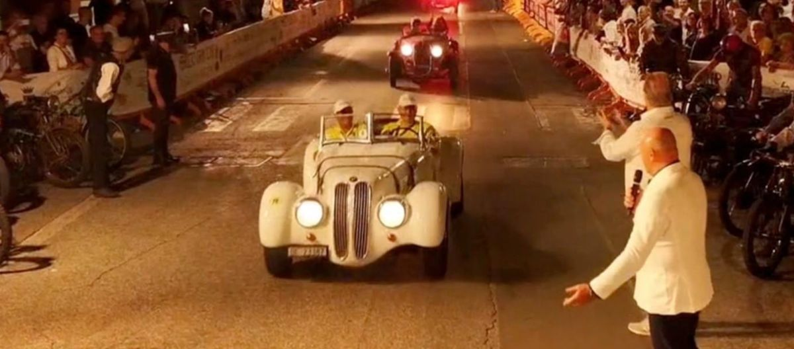

Unsere Haltung
Kulturgut gehört auf die Strasse
Historische Automobile gehören nicht ins Museum, sondern auf die Strasse und zu den Menschen.

Warum wir fahren
tischleinfahrdich.ch macht historische Automobile für einen erweiterten Kreis erlebbar: als Beifahrer, auf dem Weg zu einem guten Essen in einem ausgewählten Gilde-Restaurant.
Wir sind kein gewerblicher Anbieter. Der Unkostenbeitrag von CHF 170 pro Stunde deckt Betrieb, Vorbereitung und Werterhalt der Fahrzeuge.
Ihr Gastgeber: Beat Sutter
Beat Sutter ist Oldtimer-Halter und zertifizierter Classic Car Scrutineer. Er pflegt seine Fahrzeuge persönlich und steuert sie bei jeder Ausfahrt selbst – ruhig, umsichtig und mit Freude am Austausch über Technik und Geschichte.